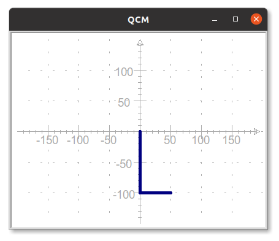
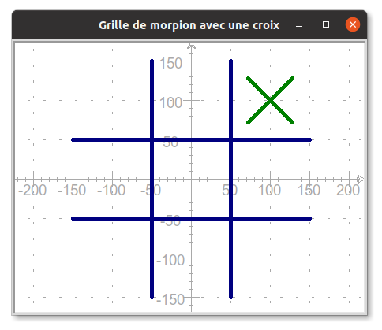

C3 Initiation à Python avec Turtle - Partie 1
Activités
 Activité 1 : Desssiner avec le module turtle
Activité 1 : Desssiner avec le module turtle
Activité 2 : Premières fonctions
Activité 3 : Boucles
Cours
Vous pouvez télécharger une copie au format pdf du diaporama de synthèse de cours présenté en classe :
Attention
Ce diaporama ne vous donne que quelques points de repères lors de vos révisions. Il devrait être complété par la relecture attentive de vos propres notes de cours et par une révision approfondie des exercices.
QCM
1. Quelle instruction permet d'orienter une tortue crayon vers le bas ?
- a)
tortue.forward(270) - b)
tortue.left(270) - c)
tortue.right(270) - d)
tortue.setheading(270)
- a)
tortue.forward(270) - b)
tortue.left(270) - c)
tortue.right(270) - d)
tortue.setheading(270)
2. On suppose que la tortue crayon est située en (0,0) et est orientée vers le bas, quelle suite d'instructions permet de construire la figure suivante ?

- a)
crayon.forward(100)
crayon.left(90)
crayon.forward(50) - b)
crayon.forward(100)
crayon.right(90)
crayon.forward(50) - c)
crayon.forward(100)
crayon.setheading(90)
crayon.forward(50) - d)
crayon.forward(100)
crayon.left(45)
crayon.forward(50)
- a)
crayon.forward(100)
crayon.left(90)
crayon.forward(50) - b)
crayon.forward(100)
crayon.right(90)
crayon.forward(50) - c)
crayon.forward(100)
crayon.setheading(90)
crayon.forward(50) - d)
crayon.forward(100)
crayon.left(45)
crayon.forward(50)
3. Quelles instructions permettent de positionner la tortue crayon en (-100,100), sans rien tracer à l'écran ?
- a)
crayon.penup()
crayon.set(-100,100) - b)
crayon.penup()
crayon.forward(-100,100) - c)
crayon.pendown()
crayon.goto(-100,100) - d)
crayon.penup()
crayon.goto(-100,100)
- a)
crayon.penup()
crayon.set(-100,100) - b)
crayon.penup()
crayon.forward(-100,100) - c)
crayon.pendown()
crayon.goto(-100,100) - d)
crayon.penup()
crayon.goto(-100,100)
4. En python, la définition d'une fonction commencer par le mot clé :
- a)
function - b)
def - c)
import - d)
return
- a)
function - b)
def - c)
import - d)
return
5. Quelle sera le dessin produit par l'instruction mystere(100,45) où mystere est la fonction ci-dessous :
def mystere(l,a):
crayon.penup()
crayon.goto(0,0)
crayon.setheading(a)
crayon.forward(l)
- a) Un trait de longueur 45 d'orientation 100° et partant de l'origine
- b) Un trait de longueur 100 d'orientation 45° et partant de l'origine
- c) Deux traits de longueur 100 se croisant à l'origine à 45°
- d) Cette fonction ne produit aucun dessin !
- a)
Un trait de longueur 45 d'orientation 100° et partant de l'origine - b)
Un trait de longueur 100 d'orientation 45° et partant de l'origine - c)
Deux traits de longueur 100 se croisant à l'origine à 45° - d) Cette fonction ne produit aucun dessin !
Exercices
Exercice 1 : Quelques dessins avec turtle
Ecrire un programme Python permettant de dessiner les figures suivante :
Aide
On donne le squelette de programme suivant qui servira de point de départ :
import turtle
papier = turtle.Screen()
crayon = turtle.Turtle()
crayon.pensize(5)
crayon.color("navy")
-
La lettre H

-
Une croix centrée sur l'origine
Attention
- La longueur totale d'une branche de couleur est de 200 pixels
- Les couleurs des branches sont navy et darkred
- La branche de couleur navy fait un angle de 45° avec l'horizontale

-
Des cercles

Exercice 2 : Utilisation d'une fonction
Rappel
On donne ci-dessous le code de la fonction ligne(x1,y1,x2,y2) vue dans l'activité 2, elle permet de tracer la ligne joignant les points d'extrémités (x1,y1) et (x2,y2)
def ligne(x1,y1,x2,y2):
crayon.penup()
crayon.goto(x1,y1)
crayon.pendown()
crayon.goto(x2,y2)
- En utilisant la fonction
ligne, construire la grille de morpion suivante :
- Dessiner de nouveau la lettre H de l'exercice 1 en vous aidant de cette fonction.
- Comparer les deux programmes (avec et sans fonction), qu'en pensez-vous ?
Exercice 3 : Ecrire une fonction
Le but de l'exercice est de pouvoir dessiner une croix dans l'une quelconque des cases de la grille de morpion de l'exercice précédent. Comme par exemple dans la case supérieure droite tel qu'illustré ci-dessous.

Les croix ont toujours la même couleur (green) et la même taille (des branches de longueur 40 pixels), seule la position de leur centre varie. On décide donc, d'écrire une fonction croix(x,y) qui trace la croix à partir du point de coordonnées (x,y)
- Recopier et compléter l'écriture de la fonction croix (pour l'instant seule la branche supérieure droite est tracée):
def croix(x,y): crayon.penup() crayon.goto(x,y) crayon.pendown() crayon.setheading(45) crayon.forward(40) ... - Utilisation de la fonction
- Quel appel à la fonction
croixpermet de tracer la croix se situant dans la case supérieure droite ? - Quel sera le résultat de l'instruction
croix(-100,0)?
- Quel appel à la fonction
Exercice 4 : Une fonction cercle
- En vous inspirant de l'exercice 3, écrire une fonction
cercle(x,y)qui permet de tracer un cercle de rayon 35 et de couleur darkred dans l'une quelconque des cases de la grille de morpion. Comme par exemple ci-dessous dans la case inférieure droite.
- Reproduire la grille de morpion suivante en utilisant les fonctions
croixetcercle: